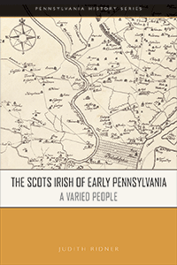

<HTML><head><script> (function(i,s,o,g,r,a,m){i['GoogleAnalyticsObject']=r;i[r]=i[r]||function(){  (i[r].q=i[r].q||[]).push(arguments)},i[r].l=1*new Date();a=s.createElement(o),  m=s.getElementsByTagName(o)[0];a.async=1;a.src=g;m.parentNode.insertBefore(a,m)   })(window,document,'script','//www.google-analytics.com/analytics.js','ga');   ga('create', 'UA-43183130-1', 'temple.edu');   ga('send', 'pageview'); </script><title>Judith Ridner: The Scots Irish of Early Pennsylvania - Print</TITLE><link rel="stylesheet" href="../general.css" type="text/css"><SCRIPT LANGUAGE = JAVASCRIPT></SCRIPT></HEAD><BODY LINK="#3152A5" VLINK="#3152A5" ALINK=Gray BGCOLOR=White>
	
	<CENTER><P CLASS=intro><br>A comprehensive yet concise early history of the Scots Irish in Pennsylvania<br><br></P></CENTER>
	<br>&nbsp;<!--none//--><Table width="100%" border=0 cellspacing=5><tr><td width="175" align="center"></td><td>
	
	<h1 class = "booktitle">The Scots Irish of Early Pennsylvania</h1> 
	<h1 class = "subtitle">A Varied People</h1>
	<h3 class="author">Judith Ridner </h3>
	<p class="info">paper EAN: 978-1-932304-32-9</br>$19.95, Jul 18, <font color=#990033>Not Yet Published Preorder</font><br>
	<p class="info"><p class="info">Electronic Book EAN: 978-1-932304-31-2</br>$19.95, Jul 18, <font color=#990033>Not Yet Published Preorder</font><br>
	<p class="info">158 pp, 6 x  9, 22 halftones, 3 maps</p></td></tr></table></P></td></tr></table><BR>
	
	<BLOCKQUOTE></BLOCKQUOTE>
	
	
	<P><p>The Scots Irish were one of early Pennsylvania's largest non-English immigrant groups. They were stereotyped as frontier ruffians and Indian haters. In <i>The Scots Irish of Early Pennsylvania, </i>historian Judith Ridner insists that this immigrant group was socio-economically diverse. Servants and free people, individuals and families, and political exiles and refugees from Ulster, they not only pioneered new frontier settlements, but also populated the state's cities&#8212;Philadelphia and Pittsburgh&#8212;and its towns, such as Lancaster, Easton, and Carlisle. <br><br>Ridner provides a much-overdue synthesis and reassessment of this immigrant group, tracing a century of Scotch-Irish migration from 1720 to 1820. These men and women brought their version of Ulster to the colonies in their fierce commitments to family, community, entrepreneurship, Presbyterianism, republican politics, and higher education. The settlements they founded across the state, including many farms, businesses, meetinghouses, and colleges, ensured that Pennsylvania would be their cradle in America, and these settlements stand as powerful testaments to their legacy to the state's history and development.<br>
		
	<P CLASS="top"><A HREF="#top">BACK TO TOP</A></P></p><P></P><P></b></p><p></p>
	
	<P><H2  class="inpageheading"><A NAME="author bio"></a>About the Author(s)</H2><p><b>Judith Ridner</b> is an Associate Professor of History at Mississippi State University and author of <i>A Town In-Between: Carlisle, Pennsylvania and the Early Mid-Atlantic Interior</i>.<br>
		
	<P CLASS="top"><A HREF="#top">BACK TO TOP</A></P></P></P>

<P><h2 class="inpageheading"><a name="subjects"></a>Subject Categories</h2> 
	<p><a href="http://www.temple.edu/tempress/history.html" target="_top">History</a> <br>
		<a href="http://www.temple.edu/tempress/race.html" target="_top">Race and Ethnicity</a> <br>
		<a href="http://www.temple.edu/tempress/philly.html" target="_top">Philadelphia Region</a> <br>
		<a href="" target="_top"></a> <br><a href="" target="_top"></a> </p></P>

<P><h2 class="inpageheading">In the Series</h2><p><a target="_top" href="http://www.temple.edu/tempress/penn_history.html" OnMouseOver="window.status='Click for other books in this series!';return true;"OnMouseOut="window.status=" ><i>Pennsylvania History</i></a></P>
<p><p>The <em>Pennsylvania History </em>series, designed to make high-quality scholarship accessible for students, advances the mission of the Pennsylvania Historical Association by engaging with key social, political, and cultural issues in the history of the state and region.</p></P>
</P></P>

<P CLASS="top"><A HREF="#top">BACK TO TOP</A></P></td><td width=2%>&nbsp;</td><td width=5>&nbsp;</td></tr></table><BR><font face="Arial" size="1"><a href="copyright.html" OnMouseOver="window.status='Web Copyright Policy';return true;" OnMouseOut="window.status=''" TITLE="Web Copyright Policy">&copy;</a> 2018 <a href="http://www.temple.edu" target="new" OnMouseOver="window.status='Link to Temple University home page';return true;" OnMouseOut="window.status=''" TITLE="Link to Temple University home page">Temple University</a>. All Rights Reserved. This page: http://www.temple.edu/tempress/titles/2442B_reg.html</font></BODY></HTML>      